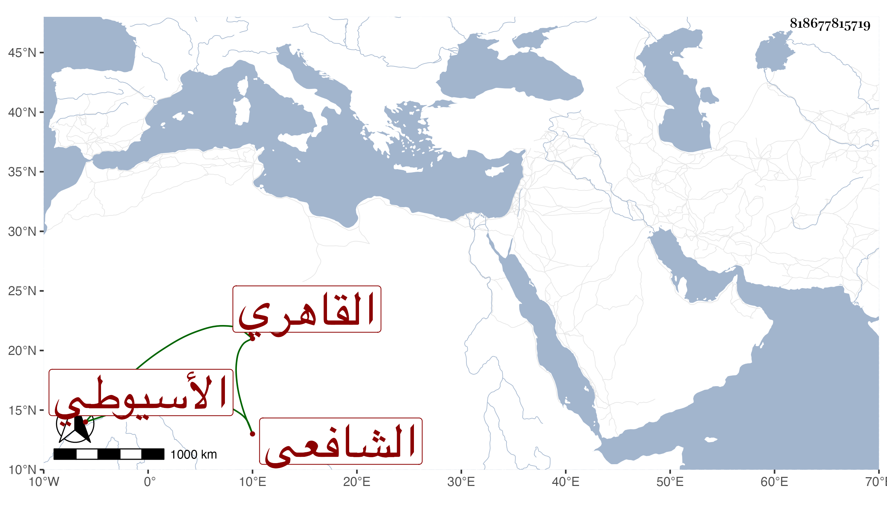

0902Sakhawi.DawLamic.ITO20230111-ara1.EIS1600.818677815719
Biography ID: 818677815719
أحمد بن عبد الخالق بن عبد المحيي بن عبد الخالق الشهاب بن السراج الأسيوطي ثم القاهري الشافعي نزيل الناصرية ووالد الولوي أحمد الماضي وأخو إسماعيل الآتي . ولد تقريبا سنة خمس وسبعين وسبعمائة وسمع من عمه العز عبد العزيز والتنوخي وعبد الله بن المعين ومحمد بن علي بن قيم الكاملية وجويرية ابنة الهكاري ومن مسموعه عليها ثلاثيات البخاري وجزء فيه مجلسان من أمالي أبي جعفر البختري وأبي بكر الشافعي وغير ذلك ، وحدث سمع منه الفضلاء وممن سمع منه ولده ، وكان صالحا عابدا خيرا رضي الأخلاق جدا كثير التهجد والتلاوة ذا هيئة حسنة وشكالة مقبولة وشيبة منورة عليه سمت الصالحين وسكينتهم ووقارهم اجتمع الناس على الثناء عليه حتى قال بعض رفقائه في الشهادة رافقته نحو أربعين سنة فما سمعت منه ما أكره ، وقال يحيى العجيسي جاره في الناصرية أنا في جواره منذ نيف وثلاثين سنة ما عبت عليه خصلة وقال أخوه : مات أبونا وخلف دنيا واسعة فخرتها وكنت أعطيه اليسير جدا في كل يوم فلما بلغ واستقل بنفسه لم يقل لي يوما من الأيام ما فعلت في تركة والدي لا تصريحا ولا تلويحا . مات في يوم السبت ثاني عشري ربيع الأول سنة ثمان وثلاثين بالمدرسة الصالحية محل سكنه ودفن بتربة الصوفية شيعه العلم البلقيني وخلق . رحمه الله وإيانا .
